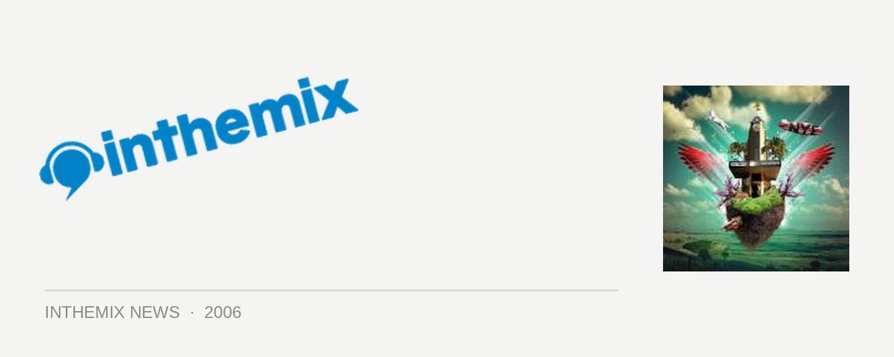

Limited VIP tickets left for DJ T on NYE
While first release tickets to the Electrik Avenue party at the Burdekin have sold out, there are 40 VIP passes left that will allow a grand view of the fireworks on the rooftop of the hotel.
The roof of the Burdekin is open between 9pm and 1am and in addition to the extraordinary view, VIP entry will allow you to sip on complimentary champagne and nibble on canapés. The VIP lounge below will be also be open all night, featuring DJs from every level playing back to back.
The lineup for the evening is as follows:
Groundfloor: Alex Almeida, Broadband & Lummy (Monkey Tennis), John Devecchis, NittyGritty DJs, Homegrown & Mark Dynamix
Level Two: Luna, Save Freaks, DJ T, Bjorn Wilke
Level Three: The Hollies, Banshee Vs Fire in the Disco
VIP tickets to Electrik Avenue are $75 while second release tickets are $65, buy them HERE from inthemix.